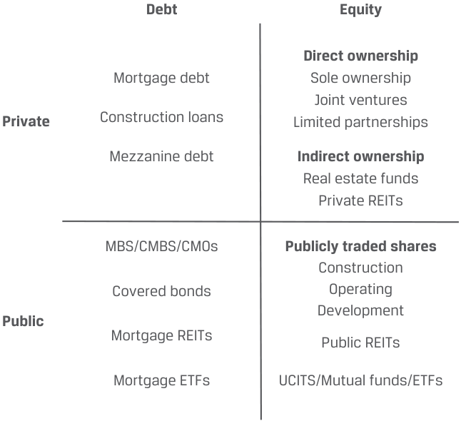
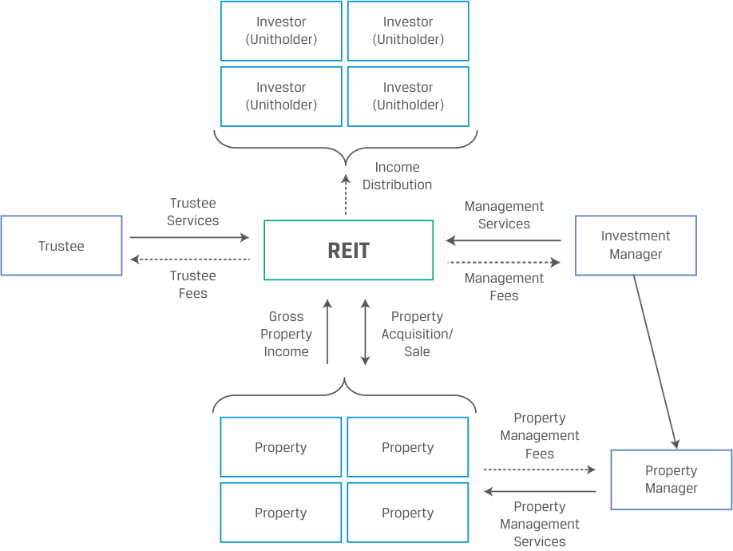
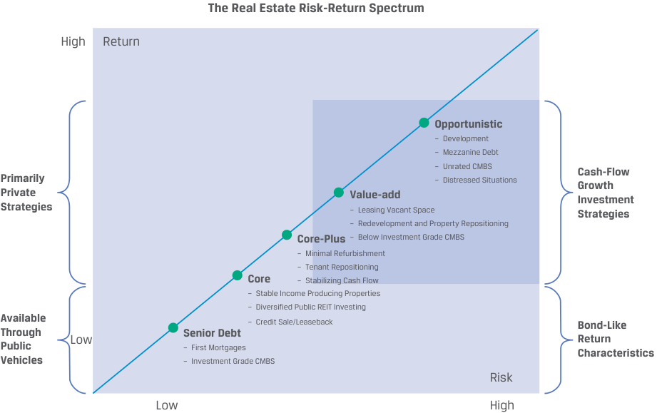

Learning Module 4 Real Estate and Infrastructure - Part 1: Introduction
Volume 8: Alternative Investments
Learning Module 4 Real Estate and Infrastructure
Part 1/2: Introduction (PDF Pages 101–114)
Tập 8: Đầu tư Thay thế (Alternative Investments)
Học phần 4: Bất động sản và Cơ sở hạ tầng (Real Estate and Infrastructure)
Phần 1/2: Giới thiệu (Trang PDF 101–114)
L E A R N I N G M O D U L E
H Ọ C P H Ầ N
4
4
Real Estate and Infrastructure
Bất động sản và Cơ sở hạ tầng (Real Estate and Infrastructure)
LEARNING OUTCOMES
MỤC TIÊU HỌC TẬP (LEARNING OUTCOMES)
Mastery The candidate should be able to: explain features and characteristics of real estate explain the investment characteristics of real estate investments explain features and characteristics of infrastructure explain the investment characteristics of infrastructure investments
Thành thạo – Ứng viên cần có khả năng: - giải thích các tính năng và đặc điểm của bất động sản (real estate) - giải thích các đặc tính đầu tư của các khoản đầu tư bất động sản (real estate investments) - giải thích các tính năng và đặc điểm của cơ sở hạ tầng (infrastructure) - giải thích các đặc tính đầu tư của các khoản đầu tư cơ sở hạ tầng (infrastructure investments)
INTRODUCTION
GIỚI THIỆU (INTRODUCTION)
1
1
Broadly defined, real estate comprises land and buildings. Real estate investments involve developed land, including commercial and industrial real estate and residential real estate. Real estate has some unique features, including heterogeneity (no two properties are identical), long lives, and fixed geographical or physical location.
Theo nghĩa rộng, bất động sản (real estate) bao gồm đất đai và các tòa nhà/công trình xây dựng. Các khoản đầu tư bất động sản liên quan đến đất đã được phát triển, bao gồm bất động sản thương mại và công nghiệp (commercial and industrial real estate) cũng như bất động sản nhà ở (residential real estate). Bất động sản có một số tính năng độc đáo, bao gồm tính không đồng nhất (heterogeneity — không có hai bất động sản nào hoàn toàn giống hệt nhau), vòng đời dài (long lives), và vị trí địa lý hoặc vật lý cố định (fixed geographical or physical location).
Raw land and less developed land used in agriculture and forestry are categorized as natural resource investments, while infrastructure involves land, buildings, and other fixed assets developed by public entities or public–private partnerships for economic use. Investments in real estate and infrastructure are included in many portfolios because they tend to exhibit low correlations with traditional asset classes and provide risk and return combinations across a broad spectrum. Here, as in other alternative assets, investors need specialized knowledge in selecting, acquiring, managing, and divesting these assets.
Đất thô (raw land) và đất ít được phát triển hơn được sử dụng trong nông nghiệp và lâm nghiệp được phân loại là các khoản đầu tư tài nguyên thiên nhiên (natural resources), trong khi cơ sở hạ tầng (infrastructure) liên quan đến đất đai, tòa nhà và các tài sản cố định khác được phát triển bởi các pháp nhân công hoặc quan hệ đối tác công – tư (public–private partnerships) cho mục đích sử dụng kinh tế. Các khoản đầu tư vào bất động sản và cơ sở hạ tầng được đưa vào nhiều danh mục đầu tư bởi vì chúng có xu hướng thể hiện mức độ tương quan thấp với các loại tài sản truyền thống và mang lại các tổ hợp rủi ro và tỷ suất sinh lợi trải rộng trên một phổ lớn. Tại đây, cũng giống như ở các tài sản thay thế khác, các nhà đầu tư cần có kiến thức chuyên môn sâu rộng trong việc lựa chọn, mua lại, quản lý và thoái vốn các tài sản này.
LEARNING MODULE OVERVIEW
TỔNG QUAN HỌC PHẦN (LEARNING MODULE OVERVIEW)
-
Real estate includes two major sectors: residential and commercial. Residential real estate is the largest sector, totaling 75% of the global market. Commercial real estate includes office buildings, shopping centers, and warehouses.
-
Real estate investing has some unique features, including heterogeneity (no two properties are identical), fragmentation, price discovery challenges, and costly and time-consuming transactions.
-
Bất động sản bao gồm hai phân khúc chính: nhà ở (residential) và thương mại (commercial). Bất động sản nhà ở là phân khúc lớn nhất, chiếm tới 75% thị trường toàn cầu. Bất động sản thương mại bao gồm các tòa nhà văn phòng, trung tâm mua sắm và nhà kho.
-
Đầu tư bất động sản có một số tính năng độc đáo, bao gồm tính không đồng nhất (heterogeneity — không có hai bất động sản nào giống hệt nhau), tính phân mảnh (fragmentation), những thách thức trong việc khám phá giá (price discovery challenges), và các giao dịch tốn kém chi phí cũng như thời gian.
-
Real estate investments can be direct or indirect, in the public market (e.g., REITs) or private transactions, and in equity.
-
The return on real estate investments comes from income or asset appreciation or a combination of both. More than half of the returns commercial real estate investors earn are derived from income, and throughout an economic market cycle, real estate income is a more consistent source of return than capital appreciation.
-
Investing in real estate can generate either lower-risk, bond-like cash flows from leases or higher-risk, equity-like speculative returns from realizing value from development projects or price appreciation.
-
Real estate offers diversification benefits to portfolios. However, during certain market conditions, equity REIT correlations with market benchmarks increase, particularly during steep market downturns.
-
Infrastructure consists of assets that are capital intensive and long lived and that are intended to provide essential services for public use.
-
Infrastructure investments can take many forms, both direct and indirect. They can be broadly categorized as either economic (e.g., transportation, utility, and energy assets) or social (e.g., educational assets). They can also be categorized based on the underlying asset’s stage of development as greenfield, secondary stage, or brownfield. The greenfield investment life cycle common among public–private partnerships is called the build-operate-transfer (BOT) life cycle.
-
Most infrastructure assets are financed, owned, and operated by governments, and infrastructure is increasingly being financed privately through public–private partnerships by local, regional, and national governments. Investments in construction and development of new infrastructure are made with expectations to generate cash from either income or capital appreciation.
-
Of the three stages of infrastructure investments, greenfield investments offer the highest expected return and have the highest expected risk, and secondary stage investments offer the lowest expected return and have the lowest expected risk.
-
Infrastructure investors primarily expect the assets to generate stable long-term cash flows that also adjust for economic growth and inflation and secondarily expect capital appreciation, depending on the type and timing of their investment.
-
Infrastructure investments provide an income stream, increase portfolio diversification by adding an asset class with typically low correlation with other public investments, provide some protection for changes in GDP growth, and offer some protection against inflation.
-
Các khoản đầu tư bất động sản có thể là trực tiếp hoặc gián tiếp, trên thị trường đại chúng (ví dụ: các quỹ tín thác đầu tư bất động sản – REITs) hoặc các giao dịch tư nhân, dưới dạng nợ và vốn cổ phần.
-
Tỷ suất sinh lợi trên các khoản đầu tư bất động sản đến từ thu nhập (income) hoặc sự tăng giá tài sản (asset appreciation) hoặc kết hợp cả hai. Hơn một nửa tỷ suất sinh lợi mà các nhà đầu tư bất động sản thương mại kiếm được bắt nguồn từ thu nhập, và xuyên suốt một chu kỳ thị trường kinh tế, thu nhập từ bất động sản là nguồn tỷ suất sinh lợi ổn định hơn so với sự tăng giá vốn (capital appreciation).
-
Đầu tư vào bất động sản có thể tạo ra các dòng tiền giống trái phiếu (bond-like cash flows) có rủi ro thấp hơn từ các hợp đồng cho thuê hoặc tỷ suất sinh lợi đầu cơ giống vốn cổ phần (equity-like speculative returns) có rủi ro cao hơn từ việc hiện thực hóa giá trị từ các dự án phát triển hoặc tăng giá tài sản.
-
Bất động sản mang lại lợi ích đa dạng hóa cho các danh mục đầu tư. Tuy nhiên, trong những điều kiện thị trường nhất định, hệ số tương quan của các quỹ REIT vốn cổ phần (equity REITs) với các chỉ số chuẩn thị trường lại tăng lên, đặc biệt là trong các đợt suy thoái thị trường lao dốc mạnh.
-
Cơ sở hạ tầng (infrastructure) bao gồm các tài sản thâm dụng vốn (capital intensive) và có vòng đời dài (long lived), được thiết kế nhằm cung cấp các dịch vụ thiết yếu phục vụ mục đích công cộng.
-
Các khoản đầu tư cơ sở hạ tầng có thể diễn ra dưới nhiều hình thức, cả trực tiếp và gián tiếp. Chúng có thể được phân loại rộng thành cơ sở hạ tầng kinh tế (economic — ví dụ: tài sản giao thông vận tải, tiện ích và năng lượng) hoặc cơ sở hạ tầng xã hội (social — ví dụ: tài sản giáo dục). Chúng cũng có thể được phân loại dựa trên giai đoạn phát triển của tài sản cơ sở thành dự án mới (greenfield), giai đoạn thứ cấp (secondary stage), hoặc dự án mở rộng/nâng cấp (brownfield). Vòng đời đầu tư dự án mới (greenfield) phổ biến trong các quan hệ đối tác công – tư được gọi là vòng đời xây dựng – vận hành – chuyển giao (build-operate-transfer – BOT).
-
Hầu hết các tài sản cơ sở hạ tầng được tài trợ, sở hữu và vận hành bởi chính phủ, đồng thời cơ sở hạ tầng đang ngày càng được tài trợ tư nhân thông qua các quan hệ đối tác công – tư (public–private partnerships – PPPs) bởi chính quyền địa phương, khu vực và quốc gia. Các khoản đầu tư vào việc xây dựng và phát triển cơ sở hạ tầng mới được thực hiện với kỳ vọng tạo ra tiền mặt từ thu nhập hoặc từ sự tăng giá vốn.
-
Trong ba giai đoạn đầu tư cơ sở hạ tầng, các khoản đầu tư dự án mới (greenfield investments) mang lại tỷ suất sinh lợi kỳ vọng cao nhất và có rủi ro kỳ vọng cao nhất, còn các khoản đầu tư giai đoạn thứ cấp (secondary stage investments) mang lại tỷ suất sinh lợi kỳ vọng thấp nhất và có rủi ro kỳ vọng thấp nhất.
-
Các nhà đầu tư cơ sở hạ tầng trước hết kỳ vọng các tài sản sẽ tạo ra dòng tiền dài hạn ổn định có điều chỉnh theo tăng trưởng kinh tế và lạm phát, và thứ hai mới kỳ vọng vào sự tăng giá vốn, tùy thuộc vào loại hình và thời điểm đầu tư của họ.
-
Các khoản đầu tư cơ sở hạ tầng cung cấp một dòng thu nhập, làm tăng tính đa dạng hóa của danh mục đầu tư bằng cách bổ sung một loại tài sản thường có mức độ tương quan thấp với các khoản đầu tư đại chúng khác, mang lại sự bảo vệ nhất định trước những thay đổi trong tăng trưởng GDP, và cung cấp một mức độ bảo vệ chống lại lạm phát.
LEARNING MODULE SELF-ASSESSMENT
TỰ ĐÁNH GIÁ HỌC PHẦN (LEARNING MODULE SELF-ASSESSMENT)
These initial questions are intended to help you gauge your current level of understanding of this learning module.
Những câu hỏi ban đầu này nhằm giúp bạn tự đánh giá mức độ hiểu biết hiện tại của mình về học phần này.
- The two categories of real property are:
-
A. residential and commercial.
-
B. privately held and publicly traded.
- Hai phân loại của bất động sản thực (real property) là:
-
A. nhà ở và thương mại (residential and commercial).
-
B. nắm giữ tư nhân và giao dịch đại chúng (privately held and publicly traded).
| C.individual market and institutional market. Solution: |
|---|
| The correct answer is A. The two categories of real property are residential and commercial. |
| 2. The preferred investment vehicles for public investors to own income-pro- ducing real estate are: |
| A.real estate funds. |
| B.mortgage-backed securities. |
| C.real estate investment trusts. Solution: |
| The correct answer is C. Real estate investment trusts (REITs) are the pre- ferred investment vehicles for owning income-producing real estate for both private and public investors. |
| 3. Which of the following entails the least risk? |
| A.Value-add real estate |
| B.Investment-grade commercial mortgage-backed securities |
| C.Residential real estate with long-term leases and many lessors Solution: |
| The correct answer is B. Of these three, investment-grade commercial mortgage-backed securities (CMBS) entail the least risk, and value-add real estate investments entail the most. |
| 4. Which of the following entails the most risk? |
| A.Mezzanine debt |
| B.Core-plus real estate strategies |
| C.Redevelopment of an existing property Solution: |
| The correct answer is A. Of these three, mezzanine debt entails the most risk, and core-plus strategies entail the least. |
| 5. The first stage of development of an infrastructure asset is typically called: |
| A.bluesky. |
| B.greenfield. |
| C.early stage. Solution: |
| The correct answer is B. The first stage of development of an infrastructure asset is typically called greenfield. Greenfield investing involves developing new assets and new infrastructure with the intention either to lease or sell the assets to the government after construction or to hold and operate the assets. Greenfield investors typically invest alongside strategic investors or developers that specialize in developing the underlying assets. The sub- sequent stages of development of infrastructure assets are typically called secondary stage and brownfield. |
- C. thị trường cá nhân và thị trường định chế (individual market and institutional market).
Lời giải:
Đáp án đúng là A. Hai phân loại của bất động sản thực là bất động sản nhà ở (residential) và bất động sản thương mại (commercial).
- Phương tiện đầu tư được ưa chuộng để các nhà đầu tư đại chúng sở hữu bất động sản tạo thu nhập (income-producing real estate) là:
- A. các quỹ bất động sản (real estate funds).
- B. chứng khoán đảm bảo bằng thế chấp (mortgage-backed securities).
- C. tín thác đầu tư bất động sản (real estate investment trusts).
Lời giải:
Đáp án đúng là C. Tín thác đầu tư bất động sản (Real estate investment trusts – REITs) là phương tiện đầu tư được ưa chuộng để sở hữu bất động sản tạo thu nhập đối với cả các nhà đầu tư tư nhân và đại chúng.
- Khoản đầu tư nào sau đây có rủi ro thấp nhất?
- A. Bất động sản giá trị gia tăng (Value-add real estate)
- B. Chứng khoán đảm bảo bằng thế chấp thương mại hạng đầu tư (Investment-grade commercial mortgage-backed securities)
- C. Bất động sản nhà ở có hợp đồng thuê dài hạn và nhiều bên thuê (Residential real estate with long-term leases and many lessors)
Lời giải:
- Direct infrastructure investment involves assets that are:
Đáp án đúng là B. Trong ba phương án này, chứng khoán đảm bảo bằng thế chấp thương mại (CMBS) hạng đầu tư có rủi ro thấp nhất, và các khoản đầu tư bất động sản giá trị gia tăng (value-add real estate) có rủi ro cao nhất.
- Khoản đầu tư nào sau đây có rủi ro cao nhất?
- A. Nợ tầng giữa (Mezzanine debt)
- B. Chiến lược bất động sản cốt lõi mở rộng (Core-plus real estate strategies)
- C. Tái phát triển một bất động sản hiện hữu (Redevelopment of an existing property)
Lời giải:
Đáp án đúng là A. Trong ba phương án này, nợ tầng giữa (mezzanine debt) có rủi ro cao nhất, và các chiến lược cốt lõi mở rộng (core-plus strategies) có rủi ro thấp nhất.
- Giai đoạn phát triển đầu tiên của một tài sản cơ sở hạ tầng thường được gọi là:
- A. bầu trời xanh (bluesky).
- B. dự án mới / đồng cỏ xanh (greenfield).
- C. giai đoạn đầu (early stage).
Lời giải:
Đáp án đúng là B. Giai đoạn phát triển đầu tiên của một tài sản cơ sở hạ tầng thường được gọi là greenfield (dự án mới). Đầu tư greenfield bao gồm việc phát triển các tài sản mới và cơ sở hạ tầng mới với mục đích cho thuê hoặc bán lại tài sản cho chính phủ sau khi xây dựng hoặc nắm giữ và vận hành các tài sản đó. Các nhà đầu tư greenfield thường đầu tư cùng với các nhà đầu tư chiến lược hoặc các nhà phát triển chuyên phát triển các tài sản cơ sở. Các giai đoạn phát triển tiếp theo của tài sản cơ sở hạ tầng thường được gọi là giai đoạn thứ cấp (secondary stage) và dự án mở rộng/nâng cấp (brownfield).
- Đầu tư cơ sở hạ tầng trực tiếp liên quan đến các tài sản có tính chất:
- A. kém thanh khoản (illiquid).
-
B. securitized.
-
C. exchange traded.
-
B. được chứng khoán hóa (securitized).
-
C. được giao dịch trên sở giao dịch (exchange traded).
Solution :
Lời giải:
The correct answer is A. Like real estate, direct investment in existing infrastructure involves acquiring unique, illiquid assets with distinct location, features, and uses. Investors concerned about liquidity and diversification may invest indirectly using publicly traded infrastructure securities.
Đáp án đúng là A. Giống như bất động sản, đầu tư trực tiếp vào cơ sở hạ tầng hiện hữu liên quan đến việc mua lại các tài sản độc nhất, kém thanh khoản (unique, illiquid assets) với vị trí, tính năng và công dụng riêng biệt. Các nhà đầu tư quan tâm đến tính thanh khoản và sự đa dạng hóa có thể đầu tư gián tiếp bằng cách sử dụng các chứng khoán cơ sở hạ tầng được giao dịch đại chúng.
- Loại hình đầu tư cơ sở hạ tầng nào sau đây có tỷ suất sinh lợi kỳ vọng cao nhất?
-
A. Dự án mới (Greenfield)
-
B. Dự án mở rộng/nâng cấp (Brownfield)
-
C. Giai đoạn thứ cấp (Secondary stage)
- Which of the following types of infrastructure investments has the highest expected return?
-
A. Greenfield
-
B. Brownfield
-
C. Secondary stage
-
Solution :
Lời giải:
The correct answer is A. Greenfield investments offer the highest expected return of the three. They also entail the highest expected risk. Secondary stage offers the lowest expected return and the lowest expected risk.
Đáp án đúng là A. Các khoản đầu tư greenfield mang lại tỷ suất sinh lợi kỳ vọng cao nhất trong cả ba loại. Chúng cũng đi kèm với rủi ro kỳ vọng cao nhất. Giai đoạn thứ cấp (secondary stage) mang lại tỷ suất sinh lợi kỳ vọng thấp nhất và rủi ro kỳ vọng thấp nhất.
- Which of the following tends to make the largest allocations to the infrastructure asset class?
-
A. Pension funds
-
B. Sovereign wealth funds
-
C. Life insurance companies
-
Solution :
- Định chế nào sau đây có xu hướng phân bổ tỷ trọng lớn nhất vào loại tài sản cơ sở hạ tầng?
-
A. Các quỹ hưu trí (Pension funds)
-
B. Các quỹ đầu tư quốc gia (Sovereign wealth funds)
-
C. Các công ty bảo hiểm nhân thọ (Life insurance companies)
The correct answer is B. Sovereign wealth funds tend to make the largest allocations to the infrastructure asset class—around 5%–6% of total AUM, according to Preqin.
Lời giải:
2
Đáp án đúng là B. Các quỹ đầu tư quốc gia (sovereign wealth funds) có xu hướng thực hiện các khoản phân bổ lớn nhất vào loại tài sản cơ sở hạ tầng — khoảng 5%–6% tổng tài sản đang quản lý (AUM), theo Preqin.
REAL ESTATE FEATURES
2
explain features and characteristics of real estate
ĐẶC ĐIỂM CỦA BẤT ĐỘNG SẢN (REAL ESTATE FEATURES)
Mục tiêu học tập: giải thích các tính năng và đặc điểm của bất động sản (real estate)
Both individuals and institutions invest in real property: either in residential or commercial real estate. Residential real estate, or the housing market, consists of individual single-family detached homes and multi-family attached units, which share at least one wall with another unit, such as condominiums, cooperatives, townhouses, or terraced housing. Commercial real estate includes primarily office buildings, retail shopping centers, commercial and residential rental properties, and warehouses. In contrast to the owner-occupied market, rental properties are leased to tenants.
Cả cá nhân và các định chế đều đầu tư vào bất động sản thực (real property): hoặc vào bất động sản nhà ở (residential) hoặc vào bất động sản thương mại (commercial). Bất động sản nhà ở, hay thị trường nhà ở, bao gồm các ngôi nhà biệt lập dành cho một hộ gia đình (single-family detached homes) và các căn hộ liền kề dành cho nhiều hộ gia đình (multi-family attached units) có chung ít nhất một bức tường với căn hộ khác, chẳng hạn như chung cư (condominiums), nhà ở hợp tác xã (cooperatives), nhà phố (townhouses), hoặc nhà liền kề (terraced housing). Bất động sản thương mại chủ yếu bao gồm các tòa nhà văn phòng, trung tâm mua sắm bán lẻ, bất động sản thương mại và nhà ở cho thuê, và nhà kho. Trái ngược với thị trường nhà do chủ sở hữu tự ở (owner-occupied market), các bất động sản cho thuê (rental properties) được cho khách thuê (tenants) thuê lại.
Residential real estate is by far the largest market sector by value and size. Savills World Research estimated in July 2018 that residential real estate accounted for more than 75% of global real estate values. Although the average value of a home is less than the average value of an office building, the aggregate space required to house people is much larger than that needed to accommodate office use and retail shopping.
Bất động sản nhà ở cho đến nay là phân khúc thị trường lớn nhất xét về giá trị và quy mô. Savills World Research ước tính vào tháng 7 năm 2018 rằng bất động sản nhà ở chiếm hơn 75% giá trị bất động sản toàn cầu. Mặc dù giá trị trung bình của một ngôi nhà thấp hơn giá trị trung bình của một tòa nhà văn phòng, nhưng tổng không gian diện tích cần thiết để làm nơi ở cho con người lớn hơn rất nhiều so với không gian cần thiết để đáp ứng nhu cầu sử dụng văn phòng và mua sắm bán lẻ.
Real Estate Investments
Đầu tư Bất động sản (Real Estate Investments)
Real estate investments exhibit general similarities to and differences from traditional equity and debt classes. Real estate can be held privately or traded publicly through real estate investment trusts (REITs). Equity investment involves direct or indirect ownership with claims to residual cash flows from the property. Depending on the property investment, these cash flows can be variable or fixed. Debt investment typically involves direct mortgage lending from financial intermediaries, part of which then can be securitized and then traded through various types of mortgage-backed securities (MBS). The main features of residential and commercial real estate are shown in Exhibit 1.
Các khoản đầu tư bất động sản thể hiện những điểm tương đồng và khác biệt chung so với các loại tài sản vốn cổ phần và nợ truyền thống. Bất động sản có thể được nắm giữ tư nhân hoặc giao dịch đại chúng thông qua các quỹ tín thác đầu tư bất động sản (real estate investment trusts – REITs). Đầu tư vốn cổ phần liên quan đến quyền sở hữu trực tiếp hoặc gián tiếp kèm theo quyền đòi hỏi đối với dòng tiền còn lại (residual cash flows) từ bất động sản. Tùy thuộc vào khoản đầu tư bất động sản, những dòng tiền này có thể biến đổi hoặc cố định. Đầu tư nợ thường liên quan đến việc cho vay thế chấp trực tiếp từ các định chế tài chính trung gian, một phần trong đó sau đó có thể được chứng khoán hóa (securitized) và giao dịch thông qua nhiều loại chứng khoán đảm bảo bằng thế chấp (mortgage-backed securities – MBS) khác nhau. Các đặc điểm chính của bất động sản nhà ở và bất động sản thương mại được trình bày trong Minh họa 1.
Exhibit 1: Main Features of Residential and Commercial Real Estate
Minh họa 1: Các Đặc điểm Chính của Bất động sản Nhà ở và Bất động sản Thương mại (Main Features of Residential and Commercial Real Estate)
| Residential real estate | Commercial real estate | |
|---|---|---|
| Typical property | Owner-occupied, single resi- dences; single-family residen- tial property |
Residential properties owned for lease or rental Office, retail, industrial, ware- house, hospitality, and mixed-use properties |
| Source of equity | Owners | Privately held by owners Publicly held through investors |
| Source of debt | Directly: Lenders (banks) through residential mortgages Indirectly: Investors in MBS that package residential mortgages |
Directly: Lenders (banks) through commercial mortgages Indirectly: Investors in MBS that package commercial mortgages |
| Source of return to investors |
Enjoyment of the property Price, or capital, appreciation |
Income, or cash flow, generated by the property Price, or capital, appreciation |
| Bất động sản nhà ở (Residential real estate) | Bất động sản thương mại (Commercial real estate) | |
|---|---|---|
| Bất động sản điển hình (Typical property) | Nhà ở đơn lẻ do chủ sở hữu tự ở; bất động sản nhà ở cho một hộ gia đình (Owner-occupied, single residences; single-family residential property) | Bất động sản nhà ở thuộc sở hữu để cho thuê (Residential properties owned for lease or rental) Bất động sản văn phòng, bán lẻ, công nghiệp, nhà kho, khách sạn nghỉ dưỡng và phức hợp đa năng (Office, retail, industrial, warehouse, hospitality, and mixed-use properties) |
| Nguồn vốn cổ phần (Source of equity) | Chủ sở hữu (Owners) | Nắm giữ tư nhân bởi các chủ sở hữu (Privately held by owners) Nắm giữ đại chúng thông qua các nhà đầu tư (Publicly held through investors) |
| Nguồn nợ (Source of debt) | Trực tiếp: Các bên cho vay (ngân hàng) thông qua các khoản thế chấp nhà ở (residential mortgages) Gián tiếp: Các nhà đầu tư vào MBS đóng gói các khoản thế chấp nhà ở |
Trực tiếp: Các bên cho vay (ngân hàng) thông qua các khoản thế chấp thương mại (commercial mortgages) Gián tiếp: Các nhà đầu tư vào MBS đóng gói các khoản thế chấp thương mại |
| Nguồn tỷ suất sinh lợi cho nhà đầu tư (Source of return to investors) | Sự thụ hưởng công năng của bất động sản (Enjoyment of the property) Sự tăng giá, hay tăng giá trị vốn (Price, or capital, appreciation) |
Thu nhập, hay dòng tiền, được tạo ra bởi bất động sản (Income, or cash flow, generated by the property) Sự tăng giá, hay tăng giá trị vốn (Price, or capital, appreciation) |
Real estate is uniquely different from other asset classes in several ways:
Bất động sản khác biệt một cách độc đáo so với các loại tài sản khác ở một số khía cạnh:
-
The initial investment is typically large.
-
Real estate is unique and distinct because there aren’t two identical properties; each piece of real estate is heterogeneous and is uniquely characterized in terms of location, age, tenant credit mix, lease term, and market demographics.
-
There are multiple types of real estate investment alternatives available: direct and indirect investment options spanning the spectrum from relatively liquid investments in stable, income-producing properties to illiquid investments over a long development life cycle across the purchase, construction/upgrade, occupancy, and sales phases.
-
Diversification across all different types of real estate investment alternatives may be difficult to attain.
-
Private market indexes replicating the performance of real estate are not directly investable.
-
Khoản đầu tư ban đầu thường có quy mô lớn.
-
Bất động sản là duy nhất và riêng biệt bởi vì không có hai bất động sản nào giống hệt nhau; mỗi bất động sản đều không đồng nhất (heterogeneous) và mang những đặc trưng độc nhất về vị trí, tuổi đời, cơ cấu chất lượng tín dụng của khách thuê (tenant credit mix), thời hạn hợp đồng thuê, và nhân khẩu học của thị trường.
-
Có nhiều loại hình lựa chọn đầu tư bất động sản sẵn có: các lựa chọn đầu tư trực tiếp và gián tiếp trải rộng trên toàn bộ phổ từ những khoản đầu tư tương đối thanh khoản vào các bất động sản ổn định, tạo thu nhập cho đến các khoản đầu tư kém thanh khoản trong một vòng đời phát triển kéo dài qua các giai đoạn mua, xây dựng/nâng cấp, lấp đầy (occupancy), và bán.
-
Việc đa dạng hóa trên tất cả các loại hình lựa chọn đầu tư bất động sản khác nhau có thể khó đạt được.
-
Các chỉ số thị trường tư nhân mô phỏng hiệu quả hoạt động của bất động sản không thể đầu tư trực tiếp được (not directly investable).
Additionally, the price discovery process in the private real estate markets is opaque, for multiple reasons:
Ngoài ra, quá trình khám phá giá (price discovery process) trên các thị trường bất động sản tư nhân thiếu tính minh bạch (opaque), vì nhiều lý do:
- Historical prices may not reflect prevailing market conditions.
- Giá lịch sử có thể không phản ánh các điều kiện thị trường hiện hành.
-
Transaction costs are typically high. Buying and selling real estate can be a time-consuming process, involving real estate professionals, banks, lawyers, and others needed to facilitate these transactions.
-
Transaction activity may be limited in certain markets due to either supply or demand conditions.
-
Chi phí giao dịch thường cao. Việc mua và bán bất động sản có thể là một quá trình tốn nhiều thời gian, đòi hỏi sự tham gia của các chuyên gia bất động sản, ngân hàng, luật sư và những bên khác cần thiết để hỗ trợ thực hiện các giao dịch này.
-
Hoạt động giao dịch có thể bị hạn chế ở một số thị trường nhất định do điều kiện cung hoặc cầu.
Because of distinct and unique features—geographic location and potential uses— real estate markets are typically fragmented, with the local demand and supply conditions determining the value of the property. Consequently, the heterogeneity unique to real estate demands specialized skills. Selecting, valuing, acquiring, managing, and divesting a real estate portfolio is often more complicated than managing a portfolio made up of listed corporate debt and equity.
Do những đặc tính riêng biệt và độc nhất — vị trí địa lý và các công năng sử dụng tiềm năng — các thị trường bất động sản thường bị phân mảnh (fragmented), trong đó điều kiện cung và cầu tại địa phương quyết định giá trị của bất động sản. Hệ quả là, tính không đồng nhất đặc trưng của bất động sản đòi hỏi những kỹ năng chuyên môn hóa. Việc lựa chọn, định giá, mua lại, quản lý và thoái vốn một danh mục bất động sản thường phức tạp hơn so với việc quản lý một danh mục bao gồm nợ và vốn cổ phần doanh nghiệp niêm yết.
Real Estate Investment Structures
Cấu trúc Đầu tư Bất động sản (Real Estate Investment Structures)
Real estate investments take on a variety of public and private forms across equity and debt capital alternatives, as summarized in Exhibit 2.
Các khoản đầu tư bất động sản diễn ra dưới nhiều hình thức đại chúng và tư nhân khác nhau xuyên suốt các lựa chọn vốn cổ phần và vốn nợ, như được tóm tắt trong Minh họa 2.
Exhibit 2: Selected Forms of Real Estate Investment
Minh họa 2: Một số Hình thức Đầu tư Bất động sản Chọn lọc (Selected Forms of Real Estate Investment)

Chú thích hình ảnh: - Tư nhân (Private): - Nợ (Debt): Nợ thế chấp (Mortgage debt), Các khoản vay xây dựng (Construction loans), Nợ tầng giữa (Mezzanine debt). - Vốn cổ phần (Equity): - Sở hữu trực tiếp (Direct ownership): Sở hữu duy nhất (Sole ownership), Liên doanh (Joint ventures), Công ty hợp danh hữu hạn (Limited partnerships). - Sở hữu gián tiếp (Indirect ownership): Các quỹ bất động sản (Real estate funds), REITs tư nhân (Private REITs). - Đại chúng (Public): - Nợ (Debt): MBS/CMBS/CMOs, Trái phiếu có bảo đảm (Covered bonds), REITs thế chấp (Mortgage REITs), ETFs thế chấp (Mortgage ETFs). - Vốn cổ phần (Equity): - Cổ phiếu giao dịch đại chúng (Publicly traded shares): Xây dựng (Construction), Vận hành (Operating), Phát triển (Development). - REITs đại chúng (Public REITs). - UCITS / Quỹ tương hỗ (Mutual funds) / ETFs.
Direct Real Estate Investment
Đầu tư Bất động sản Trực tiếp (Direct Real Estate Investment)
Direct private investing involves purchasing a property and originating debt for one’s own account. Ownership can be free and clear, whereby the property title is transferred to the owner(s) unencumbered by any financing liens, such as from outstanding mortgages. Initial purchase expenses associated with direct ownership may include legal expenses, survey costs, engineering/environmental studies, and valuation (appraisal) fees. There are distinct advantages to owning real estate directly for property investors:
Đầu tư tư nhân trực tiếp bao gồm việc mua một bất động sản và khởi tạo khoản nợ cho chính tài khoản của mình. Quyền sở hữu có thể ở trạng thái hoàn toàn sạch nợ (free and clear), theo đó quyền sở hữu bất động sản (property title) được chuyển giao cho (các) chủ sở hữu mà không bị ràng buộc bởi bất kỳ quyền cầm giữ tài trợ nào (unencumbered by any financing liens), chẳng hạn như từ các khoản thế chấp còn dư nợ. Chi phí mua ban đầu gắn liền với quyền sở hữu trực tiếp có thể bao gồm chi phí pháp lý, chi phí khảo sát, nghiên cứu kỹ thuật/môi trường, và phí định giá (thẩm định giá – appraisal). Có những ưu điểm rõ rệt khi sở hữu bất động sản trực tiếp đối với các nhà đầu tư bất động sản:
- Control. Only the owner can decide when to buy or sell, when and how much to spend on capital projects, whom to select as tenants based on credit quality preference and tenant mix, and what types of lease terms to
- _Quyền kiểm soát (Control).__ Chỉ có chủ sở hữu mới có thể quyết định khi nào nên mua hoặc bán, khi nào và chi bao nhiêu tiền cho các dự án đầu tư vốn, chọn ai làm khách thuê dựa trên mức độ ưu tiên về chất lượng tín dụng và cơ cấu khách thuê, cũng như đưa ra những loại điều khoản hợp đồng thuê nào.
offer. Owners generate cash flow returns from the use and enjoyment of the property, the receipt of lease payments, and the potential for capital appreciation.
Các chủ sở hữu tạo ra tỷ suất sinh lợi dòng tiền từ việc sử dụng và thụ hưởng bất động sản, việc nhận các khoản thanh toán tiền thuê, và tiềm năng tăng giá vốn.
-
Tax benefits. The owners can reduce their taxable income using non-cash property depreciation expenses and tax-deductible interest expenses.
-
Diversification. Historically, real estate has exhibited low correlation with other asset classes, and adding real estate to a portfolio has been demonstrated to increase portfolio diversification and reduce portfolio risk.
-
_Lợi ích về thuế (Tax benefits).__ Các chủ sở hữu có thể làm giảm thu nhập chịu thuế của mình bằng cách sử dụng chi phí khấu hao bất động sản phi tiền mặt (non-cash property depreciation expenses) và chi phí lãi vay được khấu trừ thuế (tax-deductible interest expenses).
-
_Đa dạng hóa (Diversification).__ Trong lịch sử, bất động sản đã thể hiện mức độ tương quan thấp với các loại tài sản khác, và việc bổ sung bất động sản vào một danh mục đầu tư đã được chứng minh là làm tăng tính đa dạng hóa của danh mục và làm giảm rủi ro danh mục.
There are also disadvantages to investing directly in property:
Cũng có những nhược điểm khi đầu tư trực tiếp vào bất động sản:
-
Complexity. The owners need to dedicate time to manage the property. Making the purchase itself is more complicated as well, with requirements including property selection, negotiating terms, performing due diligence, title search, contract review, and property inspection.
-
Need for specialized knowledge. The owners need to understand both general and local market characteristics, which requires local market knowledge.
-
Significant capital needs. The owners need to have access to a potentially significant amount of debt and equity capital because of the large initial capital outlay needed for real estate investments.
-
Concentration risk. Owners, particularly smaller investors, cannot create a well-diversified real estate portfolio through direct investment.
-
Lack of liquidity. It is typically difficult to quickly buy or sell direct investments in real estate, and transaction costs are typically high.
-
_Tính phức tạp (Complexity).__ Các chủ sở hữu cần dành thời gian để quản lý bất động sản. Bản thân việc thực hiện giao dịch mua cũng phức tạp hơn, với các yêu cầu bao gồm lựa chọn bất động sản, đàm phán các điều khoản, thực hiện thẩm định chuyên sâu (due diligence), tra cứu quyền sở hữu (title search), rà soát hợp đồng, và kiểm định hiện trạng bất động sản (property inspection).
-
_Nhu cầu về kiến thức chuyên biệt (Need for specialized knowledge).__ Các chủ sở hữu cần hiểu rõ cả các đặc điểm thị trường chung lẫn thị trường địa phương, điều đòi hỏi phải có kiến thức thị trường bản địa.
-
_Nhu cầu vốn đáng kể (Significant capital needs).__ Các chủ sở hữu cần có khả năng tiếp cận một lượng vốn nợ và vốn cổ phần tiềm tàng rất lớn do khoản chi vốn ban đầu lớn cần thiết cho các khoản đầu tư bất động sản.
-
_Rủi ro tập trung (Concentration risk).__ Các chủ sở hữu, đặc biệt là những nhà đầu tư nhỏ hơn, không thể tạo ra một danh mục bất động sản được đa dạng hóa tốt thông qua đầu tư trực tiếp.
-
_Thiếu tính thanh khoản (Lack of liquidity).__ Thường rất khó để nhanh chóng mua hoặc bán các khoản đầu tư trực tiếp vào bất động sản, và chi phí giao dịch thường rất cao.
Real estate investors may choose to handle all aspects of investing in and operating the property internally. However, commercial real estate investors often hire advisers to identify investments, negotiate acquisition and lease terms, perform due diligence, conduct real estate operations, and assist with the eventual disposal. Institutional investors that hire advisers or managers to manage their direct real estate investment can also use a separate account structure that allows the investor to control the timing and value of acquisitions and dispositions.
Các nhà đầu tư bất động sản có thể chọn tự xử lý nội bộ tất cả các khía cạnh của việc đầu tư và vận hành bất động sản. Tuy nhiên, các nhà đầu tư bất động sản thương mại thường thuê các nhà tư vấn để xác định các khoản đầu tư, đàm phán các điều khoản mua lại và cho thuê, thực hiện thẩm định chuyên sâu, tiến hành các hoạt động vận hành bất động sản, và hỗ trợ việc thanh lý/thoái vốn cuối cùng. Các nhà đầu tư định chế thuê cố vấn hoặc nhà quản lý để quản lý khoản đầu tư bất động sản trực tiếp của mình cũng có thể sử dụng cấu trúc tài khoản tách biệt (separate account structure) cho phép nhà đầu tư kiểm soát thời điểm và giá trị của các thương vụ mua lại và thoái vốn.
Owners can also borrow from mortgage lenders to fund the acquisition. Additional debt closing costs are incurred when owners take out loans to fund their investments.
Các chủ sở hữu cũng có thể vay từ các bên cho vay thế chấp để tài trợ cho thương vụ mua lại. Các chi phí hoàn tất khoản vay (debt closing costs) bổ sung sẽ phát sinh khi chủ sở hữu vay vốn để tài trợ cho các khoản đầu tư của mình.
Indirect Real Estate Investment
Đầu tư Bất động sản Gián tiếp (Indirect Real Estate Investment)
Indirect investment in real estate pools assets from different investors to acquire one or several properties; here the exposure is indirect through a variety of investment vehicles. These can be public or private, such as limited partnerships, mutual funds, equities, REITs, and exchange-traded funds (ETFs). Sometimes investors form joint ventures with other investors to invest in real estate. Joint ventures are especially common when one party can uniquely contribute something of value, such as land, capital, development expertise, debt due diligence, or entrepreneurial talent.
Đầu tư gián tiếp vào bất động sản tập hợp tài sản từ các nhà đầu tư khác nhau để mua lại một hoặc nhiều bất động sản; ở đây sự phơi nhiễm là gián tiếp thông qua nhiều phương tiện đầu tư khác nhau. Những phương tiện này có thể là đại chúng hoặc tư nhân, chẳng hạn như công ty hợp danh hữu hạn (limited partnerships), quỹ tương hỗ (mutual funds), cổ phiếu, REITs, và các quỹ hoán đổi danh mục (ETFs). Đôi khi các nhà đầu tư thành lập các liên doanh (joint ventures) với những nhà đầu tư khác để đầu tư vào bất động sản. Các liên doanh đặc biệt phổ biến khi một bên có thể đóng góp độc quyền một thứ gì đó có giá trị, chẳng hạn như đất đai, vốn, chuyên môn phát triển dự án, năng lực thẩm định nợ, hoặc tài năng khởi nghiệp kinh doanh.
Tax-advantaged trusts that own, operate, and sometimes develop income-producing real estate property are known as real estate investment trusts. Their structure is shown in Exhibit 3. There are three main forms of REIT: equity REITs, which invest in properties outright or through partnerships and joint ventures; mortgage REITs, which underwrite loans to real estate (mortgages) or invest in MBS; and hybrid REITs, which invest in both these types.
Các quỹ tín thác được hưởng ưu đãi thuế (tax-advantaged trusts) chuyên sở hữu, vận hành và đôi khi phát triển các bất động sản tạo thu nhập được gọi là các quỹ tín thác đầu tư bất động sản (real estate investment trusts – REITs). Cấu trúc của chúng được hiển thị trong Minh họa 3. Có ba hình thức REIT chính: REIT vốn cổ phần (equity REITs), đầu tư trực tiếp vào bất động sản hoặc thông qua các công ty hợp danh và liên doanh; REIT thế chấp (mortgage REITs), bảo lãnh cho vay đối với bất động sản (các khoản thế chấp) hoặc đầu tư vào MBS; và REIT lai ghép (hybrid REITs), đầu tư vào cả hai loại hình này.
Exhibit 3: Real Estate Investment Trust Structure
Minh họa 3: Cấu trúc Quỹ Tín thác Đầu tư Bất động sản (Real Estate Investment Trust Structure)

Chú thích hình ảnh: - Nhà đầu tư / Người nắm giữ chứng chỉ quỹ (Investor / Unitholder) $\longleftarrow$ Phân phối thu nhập (Income Distribution) từ REIT. - Bên nhận ủy thác (Trustee): Cung cấp dịch vụ ủy thác (Trustee Services) cho REIT $\longleftrightarrow$ Nhận phí ủy thác (Trustee Fees) từ REIT. - Nhà quản lý đầu tư (Investment Manager): Cung cấp dịch vụ quản lý (Management Services) cho REIT $\longleftrightarrow$ Nhận phí quản lý (Management Fees) từ REIT. - REIT: Nhận tổng thu nhập bất động sản (Gross Property Income) và thực hiện mua/bán bất động sản (Property Acquisition/Sale) đối với các Bất động sản (Property). - Nhà quản lý bất động sản (Property Manager): Cung cấp dịch vụ quản lý bất động sản (Property Management Services) cho các bất động sản và nhận phí quản lý bất động sản (Property Management Fees) từ REIT.
REITs are the preferred investment vehicles for owning income-producing real estate for both private and public investors. The main appeal of the REIT structure is the elimination of double corporate taxation. Corporations pay taxes on their income, from which they make dividend distribution to their owners from after-tax earnings. The shareholders, in turn, are taxed at their personal tax rate. REITs can avoid corporate income taxation by distributing dividends equal to 90%–100% of taxable net rental income.
REITs là phương tiện đầu tư được ưa chuộng để sở hữu bất động sản tạo thu nhập đối với cả các nhà đầu tư tư nhân và đại chúng. Sức hấp dẫn chính của cấu trúc REIT là việc loại bỏ tình trạng đánh thuế hai lần đối với doanh nghiệp (elimination of double corporate taxation). Các công ty cổ phần thông thường phải nộp thuế trên thu nhập của mình, từ đó họ mới phân phối cổ tức cho các chủ sở hữu từ phần lợi nhuận sau thuế. Đến lượt mình, các cổ đông lại bị đánh thuế theo mức thuế suất cá nhân của họ. Các quỹ REIT có thể tránh thuế thu nhập doanh nghiệp bằng cách phân phối cổ tức bằng 90%–100% thu nhập cho thuê ròng chịu thuế (taxable net rental income).
The business strategy for equity REITs is simple: Maximize property occupancy rates and rents while minimizing ongoing operating and maintenance expenses to maximize cash income and dividends. REITs are a popular investment vehicle both in the United States, where they originated, and in other countries. REITs and REIT-like structures have similar legal and taxation structures and provide unique tax advantages to investors and the corporate entity.
Chiến lược kinh doanh của các quỹ REIT vốn cổ phần (equity REITs) rất đơn giản: Tối đa hóa tỷ lệ lấp đầy bất động sản (occupancy rates) và tiền thuê trong khi tối thiểu hóa các chi phí vận hành và bảo trì thường xuyên nhằm tối đa hóa thu nhập bằng tiền và cổ tức. REITs là một phương tiện đầu tư phổ biến ở cả Hoa Kỳ — nơi chúng khởi nguồn — và ở các quốc gia khác. Các quỹ REIT và các cấu trúc tương tự REIT có cấu trúc pháp lý và thuế tương đồng nhau, đồng thời mang lại những lợi thế thuế độc đáo cho các nhà đầu tư và pháp nhân doanh nghiệp.
Equity REITs, like other public companies, must report earnings per share based on net income as defined by generally accepted accounting principles (GAAP) or International Financial Reporting Standards (IFRS). Many report non-traditional measures, such as net asset value or variations of gross cash flow, such as funds from operations (FFO), which makes adjustments for depreciation, distributions, and preferred dividends, to better estimate future dividends, because non-cash depreciation expenses can be high for asset-intensive businesses.
Các quỹ REIT vốn cổ phần, giống như các công ty đại chúng khác, phải báo cáo thu nhập trên mỗi cổ phiếu (EPS) dựa trên lợi nhuận ròng theo định nghĩa của các nguyên tắc kế toán được chấp nhận chung (GAAP) hoặc Chuẩn mực Báo cáo Tài chính Quốc tế (IFRS). Nhiều quỹ báo cáo các thước đo phi truyền thống, chẳng hạn như giá trị tài sản ròng (net asset value – NAV) hoặc các biến thể của dòng tiền gộp, như dòng tiền từ hoạt động kinh doanh (funds from operations – FFO) — thước đo thực hiện các điều chỉnh đối với khấu hao, các khoản phân phối và cổ tức ưu đãi để ước tính tốt hơn cổ tức trong tương lai, bởi vì chi phí khấu hao phi tiền mặt có thể rất cao đối với các doanh nghiệp thâm dụng tài sản (asset-intensive businesses).
These publicly traded REITs address many of the disadvantages related to private real estate investing. These REITs provide investors with greater transparency. Additionally, a REIT investor only needs to buy or sell REIT shares instead of buying or selling real estate directly. The REIT is not forced to sell the company’s underlying real estate like open-end funds experiencing mass redemptions. Finally, REITs have the know-how to manage the properties in order to align the interests of the REIT with those of its investors. However, a disadvantage of REITs is their higher correlation with the public equity markets when compared to private real estate.
Những quỹ REIT được giao dịch đại chúng này giải quyết được nhiều nhược điểm liên quan đến việc đầu tư bất động sản tư nhân. Các quỹ REIT này mang lại cho nhà đầu tư sự minh bạch lớn hơn. Ngoài ra, một nhà đầu tư REIT chỉ cần mua hoặc bán cổ phiếu REIT thay vì mua hoặc bán trực tiếp bất động sản. Quỹ REIT không bị buộc phải bán đi bất động sản cơ sở của công ty giống như các quỹ mở (open-end funds) khi đối mặt với làn sóng rút vốn ồ ạt (mass redemptions). Cuối cùng, các quỹ REIT có bí quyết chuyên môn để quản lý các bất động sản nhằm gắn kết lợi ích của REIT với lợi ích của các nhà đầu tư. Tuy nhiên, một nhược điểm của REIT là mức độ tương quan cao hơn của chúng với các thị trường vốn cổ phần đại chúng khi so sánh với bất động sản tư nhân.
EXAMPLE 1
VÍ DỤ 1
Luxury Dreams REIT
Quỹ Tín thác Đầu tư Bất động sản Luxury Dreams (Luxury Dreams REIT)
Luxury Dreams Real Estate Investment Trust acquires high-quality, income-oriented, high-end real estate around the world and offers investment alternatives for investors looking for long-term, stable, predictable cash flows, price appreciation in the underlying properties from the inclusion of properties, and active management of the properties, at generally lower volatility because of its focus on high-end real estate.
Quỹ Tín thác Đầu tư Bất động sản Luxury Dreams mua lại các bất động sản cao cấp, chất lượng cao, định hướng tạo thu nhập trên khắp thế giới và cung cấp các lựa chọn đầu tư cho những nhà đầu tư đang tìm kiếm dòng tiền dài hạn, ổn định, có thể dự đoán được, cùng sự tăng giá ở các bất động sản cơ sở từ việc đưa thêm các bất động sản vào danh mục và quản lý chủ động các bất động sản đó, với mức độ biến động nhìn chung thấp hơn nhờ tập trung vào phân khúc bất động sản cao cấp.
The REIT invests at least 75% of assets in high-end residential properties and up to 25% of assets in privately held, real estate-related securities, mortgage debt, and cash. The REIT is capped at USD5 billion. Because this REIT is not traded publicly, shares in the trust can be redeemed at the end of each month at a price equal to the prior month’s net asset value (NAV) per share in increments of USD10,000. NAV per share is determined at the end of each month and is released to holders within 15 business days after the end of the month. Each shareholder is limited to transact 2% of the total NAV per month and 5% of NAV per quarter.
Quỹ REIT này đầu tư ít nhất 75% tài sản vào các bất động sản nhà ở cao cấp và tối đa 25% tài sản vào các chứng khoán liên quan đến bất động sản được nắm giữ tư nhân, nợ thế chấp và tiền mặt. Quy mô của quỹ REIT này được giới hạn ở mức trần 5 tỷ USD. Bởi vì quỹ REIT này không được giao dịch đại chúng, cổ phiếu trong quỹ tín thác có thể được mua lại/rút vốn (redeemed) vào cuối mỗi tháng tại mức giá bằng với giá trị tài sản ròng (NAV) trên mỗi cổ phiếu của tháng trước đó theo các bội số 10.000 USD. NAV trên mỗi cổ phiếu được xác định vào cuối mỗi tháng và được công bố cho những người nắm giữ trong vòng 15 ngày làm việc sau khi kết thúc tháng. Mỗi cổ đông bị giới hạn giao dịch tối đa 2% tổng NAV mỗi tháng và 5% NAV mỗi quý.
REITs and other private real estate funds are structured as infinite-life, open-end funds and allow investors to contribute or redeem capital throughout the life of the fund in a fashion parallel to mutual fund structures. Open-end funds generally offer exposure to well-leased, high-quality commercial and residential real estate in the best markets, also called core real estate strategies . Investors expect core real estate to deliver stable returns, primarily from income from the property.
Các quỹ REIT và các quỹ bất động sản tư nhân khác được cấu trúc dưới dạng các quỹ mở có thời hạn vô hạn (infinite-life, open-end funds) và cho phép các nhà đầu tư góp vốn hoặc rút vốn trong suốt vòng đời của quỹ theo phương thức song hành với cấu trúc quỹ tương hỗ. Các quỹ mở nhìn chung mang lại sự tiếp cận với các bất động sản thương mại và nhà ở chất lượng cao, có tỷ lệ cho thuê tốt tại những thị trường tốt nhất, còn được gọi là các chiến lược bất động sản cốt lõi (core real estate strategies). Các nhà đầu tư kỳ vọng bất động sản cốt lõi sẽ mang lại tỷ suất sinh lợi ổn định, chủ yếu từ thu nhập cho thuê bất động sản.
Investors seeking higher returns may also accept additional risks from development, redevelopment, repositioning, and leasing. For such opportunistic investment preferences, finite-life, closed-end funds are more commonly used. Investors may focus on core-plus real estate strategies , value-add investments that require modest redevelopment or upgrades to lease any vacant space together with possible alternative use of the underlying properties. To earn higher returns, investors may engage in value-add real estate strategies , such as larger-scale redevelopment and repositioning of existing assets. The most opportunistic real estate strategies include major redevelopment, repurposing of assets, taking on large vacancies, or speculating on significant improvement in market conditions.
Các nhà đầu tư tìm kiếm tỷ suất sinh lợi cao hơn cũng có thể chấp nhận thêm rủi ro từ việc phát triển mới (development), tái phát triển (redevelopment), tái định vị (repositioning), và cho thuê. Đối với những sở thích đầu tư mang tính cơ hội như vậy, các quỹ đóng có thời hạn hữu hạn (finite-life, closed-end funds) thường được sử dụng phổ biến hơn. Các nhà đầu tư có thể tập trung vào các chiến lược bất động sản cốt lõi mở rộng (core-plus real estate strategies), tức các khoản đầu tư gia tăng giá trị đòi hỏi việc tái phát triển hoặc nâng cấp ở mức độ vừa phải để cho thuê bất kỳ không gian trống nào cùng với khả năng chuyển đổi mục đích sử dụng thay thế của các bất động sản cơ sở. Để kiếm được tỷ suất sinh lợi cao hơn nữa, các nhà đầu tư có thể tham gia vào các chiến lược bất động sản giá trị gia tăng (value-add real estate strategies), chẳng hạn như tái phát triển ở quy mô lớn hơn và tái định vị các tài sản hiện hữu. Các chiến lược bất động sản cơ hội (opportunistic real estate strategies) nhất bao gồm việc tái phát triển quy mô lớn, chuyển đổi công năng tài sản (repurposing of assets), tiếp nhận các diện tích trống lớn, hoặc đầu cơ dựa trên sự cải thiện đáng kể của các điều kiện thị trường.
Mortgage REITs and hybrid REITs invest in real estate debt, typically MBS (covered elsewhere in the curriculum. These debt REITs can be both private and publicly traded funds.
Các quỹ REIT thế chấp (mortgage REITs) và REIT lai ghép (hybrid REITs) đầu tư vào nợ bất động sản, điển hình là MBS (được đề cập ở phần khác trong chương trình học). Những quỹ REIT nợ này có thể là các quỹ tư nhân hoặc được giao dịch đại chúng.
QUESTION SET
BỘ CÂU HỎI (QUESTION SET)
- True or false: The distinct and unique features of real estate make managing a real estate portfolio less complex than managing a portfolio of listed corporate bonds.
- Đúng hay sai: Các đặc tính riêng biệt và độc nhất của bất động sản khiến việc quản lý một danh mục bất động sản ít phức tạp hơn so với việc quản lý một danh mục trái phiếu doanh nghiệp niêm yết.
Solution :
Lời giải:
False. Selecting, valuing, acquiring, managing, and divesting a real estate portfolio is often more complicated than managing a portfolio made up of listed corporate debt. The heterogeneity unique to real estate demands specialized skills, and real estate markets are typically fragmented, with the local demand and supply conditions determining the value of the property.
Sai (False). Việc lựa chọn, định giá, mua lại, quản lý và thoái vốn một danh mục bất động sản thường phức tạp hơn so với việc quản lý một danh mục bao gồm nợ doanh nghiệp niêm yết. Tính không đồng nhất đặc trưng của bất động sản đòi hỏi những kỹ năng chuyên biệt, và các thị trường bất động sản thường bị phân mảnh, với điều kiện cung và cầu tại địa phương quyết định giá trị của bất động sản.
- The largest sector of the real estate market is:
-
A. residential real estate.
-
B. real estate investment trusts.
-
C. publicly traded mortgage-backed securities.
-
Solution :
- Phân khúc lớn nhất của thị trường bất động sản là:
-
A. bất động sản nhà ở (residential real estate).
-
B. các quỹ tín thác đầu tư bất động sản (real estate investment trusts).
-
C. các chứng khoán đảm bảo bằng thế chấp được giao dịch đại chúng (publicly traded mortgage-backed securities).
The correct answer is A. Residential real estate is by far the largest market sector by value and size. Savills World Research estimated in July 2018 that residential real estate accounted for more than 75% of global real estate values.
Lời giải:
Đáp án đúng là A. Bất động sản nhà ở cho đến nay là phân khúc thị trường lớn nhất xét về giá trị và quy mô. Savills World Research ước tính vào tháng 7 năm 2018 rằng bất động sản nhà ở chiếm hơn 75% giá trị bất động sản toàn cầu.
- Describe the business strategy for equity REITs. Solution :
- Mô tả chiến lược kinh doanh của các quỹ REIT vốn cổ phần (equity REITs).
The business strategy for equity REITs is to maximize property occupancy rates and rents while minimizing ongoing operating and maintenance expenses to maximize cash income and dividends.
Lời giải:
- When a property title that is transferred to a new owner is unencumbered by any financing liens, such as from outstanding mortgages, the new ownership is considered:
-
A. privately held.
-
B. free and clear.
-
C. direct equity ownership.
-
Solution :
Chiến lược kinh doanh của các quỹ REIT vốn cổ phần là tối đa hóa tỷ lệ lấp đầy bất động sản và tiền thuê trong khi tối thiểu hóa các chi phí vận hành và bảo trì thường xuyên nhằm tối đa hóa thu nhập bằng tiền và cổ tức.
The correct answer is B. “Free and clear” refers to the lack of any financing liens on a purchased property. If a direct private investor purchases a property and receives a title that is unencumbered by any financing liens, that ownership is considered free and clear.
- Khi một quyền sở hữu bất động sản (property title) được chuyển giao cho chủ sở hữu mới mà không bị ràng buộc bởi bất kỳ quyền cầm giữ tài trợ nào, chẳng hạn như từ các khoản thế chấp còn dư nợ, quyền sở hữu mới đó được coi là:
-
A. nắm giữ tư nhân (privately held).
-
B. hoàn toàn sạch nợ (free and clear).
-
C. quyền sở hữu vốn cổ phần trực tiếp (direct equity ownership).
Lời giải:
3
Đáp án đúng là B. “Hoàn toàn sạch nợ” (“Free and clear”) đề cập đến việc không có bất kỳ quyền cầm giữ tài trợ (financing liens) nào trên một bất động sản được mua. Nếu một nhà đầu tư tư nhân trực tiếp mua một bất động sản và nhận được quyền sở hữu không bị ràng buộc bởi bất kỳ quyền cầm giữ tài trợ nào, quyền sở hữu đó được coi là free and clear.
REAL ESTATE INVESTMENT CHARACTERISTICS
3
explain the investment characteristics of real estate investments
ĐẶC TÍNH ĐẦU TƯ CỦA BẤT ĐỘNG SẢN (REAL ESTATE INVESTMENT CHARACTERISTICS)
Mục tiêu học tập: giải thích các đặc tính đầu tư của các khoản đầu tư bất động sản (real estate investments)
Investments in real estate provide competitive long-term total returns from income generation combined with potential price appreciation. Many commercial real estate companies offer multiple-year leases with fixed rents; hence, the income earned from these leases is typically both predictable and stable. Moreover, real estate tends to provide inflation protection because the lease payments are regularly adjusted, which allows for a clear valuation and pricing of the property. Finally, real estate historically has low correlations with other asset classes, and adding real estate to an investment portfolio provides diversification benefits at relatively lower levels of risk. There are a variety of indexes globally designed to measure total and component real estate returns for listed securities and non-listed investment vehicles.
Các khoản đầu tư vào bất động sản mang lại tổng tỷ suất sinh lợi dài hạn có tính cạnh tranh từ việc tạo ra thu nhập kết hợp với tiềm năng tăng giá. Nhiều công ty bất động sản thương mại cung cấp các hợp đồng thuê nhiều năm với mức tiền thuê cố định; do đó, thu nhập kiếm được từ những hợp đồng thuê này thường vừa có thể dự đoán được vừa ổn định. Hơn nữa, bất động sản có xu hướng mang lại sự bảo vệ chống lại lạm phát bởi vì các khoản thanh toán tiền thuê được điều chỉnh thường xuyên, cho phép định giá và xác định giá trị bất động sản một cách rõ ràng. Cuối cùng, bất động sản trong lịch sử có mức độ tương quan thấp với các loại tài sản khác, và việc bổ sung bất động sản vào một danh mục đầu tư mang lại lợi ích đa dạng hóa ở mức độ rủi ro tương đối thấp hơn. Có rất nhiều chỉ số trên toàn cầu được thiết kế để đo lường tổng tỷ suất sinh lợi và tỷ suất sinh lợi thành phần của bất động sản đối với các chứng khoán niêm yết và các phương tiện đầu tư không niêm yết.
Source of Returns
Nguồn Tỷ suất sinh lợi (Source of Returns)
The return on real estate investments comes from income or asset appreciation or a combination of both. Income-producing real estate generates income primarily from the collection of rental or lease payments, including lease renewals. Expenses include direct and indirect management expenses, such as maintenance and improvement costs. Income-producing real estate investment is mostly low-risk direct investment that depends on the timely receipt of lease payments. Investors relying on capital appreciation typically expect that their longer-term property development projects are successful and the exit price will exceed the aggregate investments and any cash flow that they can generate in the meantime.
Tỷ suất sinh lợi trên các khoản đầu tư bất động sản đến từ thu nhập hoặc sự tăng giá tài sản hoặc kết hợp cả hai. Bất động sản tạo thu nhập (income-producing real estate) tạo ra thu nhập chủ yếu từ việc thu tiền cho thuê (rental or lease payments), bao gồm cả việc gia hạn hợp đồng thuê. Các chi phí bao gồm chi phí quản lý trực tiếp và gián tiếp, chẳng hạn như chi phí bảo trì và cải tạo. Đầu tư bất động sản tạo thu nhập phần lớn là đầu tư trực tiếp có rủi ro thấp, phụ thuộc vào việc nhận được các khoản thanh toán tiền thuê đúng hạn. Các nhà đầu tư dựa vào sự tăng giá vốn (capital appreciation) thường kỳ vọng rằng các dự án phát triển bất động sản dài hạn hơn của họ sẽ thành công và giá thoái vốn sẽ vượt quá tổng số vốn đã đầu tư cùng bất kỳ dòng tiền nào mà họ có thể tạo ra trong khoảng thời gian đó.
The risk and return spectrum for real estate investments, depicted in Exhibit 4, includes strategies across both debt and equity investment. Investing in real estate can generate either lower-risk, bond-like cash flows from leases or higher-risk, equity-like speculative returns from realizing value from development projects or price appreciation. Moreover, most real estate strategies are financed by a combination of debt and equity, with the proportion depending on the type of real estate.
Phổ rủi ro và tỷ suất sinh lợi đối với các khoản đầu tư bất động sản, được mô tả trong Minh họa 4, bao gồm các chiến lược xuyên suốt cả đầu tư nợ và vốn cổ phần. Đầu tư vào bất động sản có thể tạo ra các dòng tiền giống trái phiếu có rủi ro thấp hơn từ các hợp đồng cho thuê hoặc tỷ suất sinh lợi đầu cơ giống vốn cổ phần có rủi ro cao hơn từ việc hiện thực hóa giá trị từ các dự án phát triển hoặc tăng giá tài sản. Hơn nữa, hầu hết các chiến lược bất động sản đều được tài trợ bằng sự kết hợp giữa nợ và vốn cổ phần, với tỷ trọng tùy thuộc vào loại hình bất động sản.
Exhibit 4: Real Estate Risk–Return Spectrum
Minh họa 4: Phổ Rủi ro – Tỷ suất sinh lợi của Bất động sản (Real Estate Risk–Return Spectrum)

Chú thích hình ảnh: - Trục tung: Tỷ suất sinh lợi (Return) từ Thấp (Low) đến Cao (High) | Trục hoành: Rủi ro (Risk) từ Thấp (Low) đến Cao (High). - Nửa dưới bên trái — Sẵn có thông qua các phương tiện đại chúng (Available Through Public Vehicles) / Đặc tính tỷ suất sinh lợi giống trái phiếu (Bond-Like Return Characteristics): 1. Nợ cấp cao (Senior Debt): Thế chấp thứ nhất (First Mortgages), CMBS hạng đầu tư (Investment Grade CMBS). 2. Cốt lõi (Core): Các bất động sản tạo thu nhập ổn định (Stable Income Producing Properties), Đầu tư REIT đại chúng đa dạng hóa (Diversified Public REIT Investing), Bán và thuê lại dựa trên tín dụng (Credit Sale/Leaseback). - Nửa trên bên phải — Chủ yếu là các chiến lược tư nhân (Primarily Private Strategies) / Chiến lược đầu tư tăng trưởng dòng tiền (Cash-Flow Growth Investment Strategies): 3. Cốt lõi mở rộng (Core-Plus): CMBS dưới hạng đầu tư (Below Investment Grade CMBS), Tân trang tối thiểu (Minimal Refurbishment), Tái định vị khách thuê (Tenant Repositioning), Ổn định hóa dòng tiền (Stabilizing Cash Flow). 4. Giá trị gia tăng (Value-add): Cho thuê không gian trống (Leasing Vacant Space), Tái phát triển và tái định vị bất động sản (Redevelopment and Property Repositioning). 5. Cơ hội (Opportunistic): Phát triển dự án mới (Development), Nợ tầng giữa (Mezzanine Debt), CMBS không được xếp hạng (Unrated CMBS), Các tình huống gặp khó khăn tài chính (Distressed Situations).
The low-risk/low-return part of the spectrum, starting in the lower left section of the exhibit, is made up by relatively low-risk, senior debt, such as first mortgages and investment-grade commercial mortgage-backed securities (CMBS). Since the underlying assets are bonds, both the risks and returns are bond-like.
Phần rủi ro thấp/tỷ suất sinh lợi thấp của phổ này, bắt đầu ở góc dưới bên trái của hình minh họa, được tạo thành bởi các khoản nợ cấp cao có rủi ro tương đối thấp, chẳng hạn như các khoản thế chấp thứ nhất (first mortgages) và chứng khoán đảm bảo bằng thế chấp thương mại (CMBS) hạng đầu tư. Vì tài sản cơ sở là trái phiếu, nên cả rủi ro lẫn tỷ suất sinh lợi đều mang tính chất giống trái phiếu (bond-like).
The second part of the of spectrum is made up of the core, stable income-producing REITs, investing in properties that generate stable cash flows either from properties with long-term leases and with many lessors (typically residential real estate) or from sale-leaseback transactions. Because in a sale-leaseback transaction the owner of the property sells the property to an investor and leases the property for continued use, the risk of default is low, providing investors a stable and relatively safe return. Additionally, real estate investors often use sale leaseback structures to secure financing in a cost-efficient way or to reduce their leverage. Overall, the returns are relatively higher compared to low-risk senior debt and are generally bond-like because the main source of return comes from long-term lease payments.
Phần thứ hai của phổ này được tạo thành từ các quỹ REIT cốt lõi, tạo thu nhập ổn định, đầu tư vào các bất động sản tạo ra dòng tiền ổn định từ những bất động sản có hợp đồng thuê dài hạn và có nhiều bên thuê (điển hình là bất động sản nhà ở) hoặc từ các giao dịch bán và thuê lại (sale-leaseback transactions). Bởi vì trong một giao dịch bán và thuê lại, chủ sở hữu của bất động sản bán bất động sản đó cho một nhà đầu tư rồi thuê lại chính bất động sản đó để tiếp tục sử dụng, nên rủi ro vỡ nợ là thấp, mang lại cho nhà đầu tư một mức tỷ suất sinh lợi ổn định và tương đối an toàn. Ngoài ra, các nhà đầu tư bất động sản thường sử dụng cấu trúc bán và thuê lại để huy động nguồn tài trợ một cách hiệu quả về chi phí hoặc để giảm mức đòn bẩy của mình. Nhìn chung, tỷ suất sinh lợi tương đối cao hơn so với nợ cấp cao rủi ro thấp và nhìn chung mang tính chất giống trái phiếu bởi vì nguồn tỷ suất sinh lợi chính đến từ các khoản thanh toán tiền thuê dài hạn.
The third and fourth parts of the spectrum offer higher, riskier, and less predictable potential returns; the main source of return moves away from the predictable, bond-like, contractual cash flows and is replaced by more speculative sources from potential price appreciation. The main source of return for core-plus holdings comes from leases, but the cost of acquiring these leases and maintaining and updating the underlying properties may become significant, particularly when the property needs refurbishment, renovation, and redevelopment. For value-add real estate, the returns are increasingly equity-like, with the price appreciation component becoming progressively meaningful.
Phần thứ ba và thứ tư của phổ mang lại tỷ suất sinh lợi tiềm năng cao hơn, rủi ro hơn và ít có khả năng dự đoán hơn; nguồn tỷ suất sinh lợi chính dịch chuyển rời xa các dòng tiền theo hợp đồng, giống trái phiếu, có thể dự đoán được và được thay thế bằng các nguồn mang tính đầu cơ nhiều hơn từ tiềm năng tăng giá. Nguồn tỷ suất sinh lợi chính đối với các khoản nắm giữ cốt lõi mở rộng (core-plus) vẫn đến từ các hợp đồng thuê, nhưng chi phí để có được những hợp đồng thuê này cũng như duy trì và nâng cấp các bất động sản cơ sở có thể trở nên đáng kể, đặc biệt là khi bất động sản cần được tân trang (refurbishment), cải tạo (renovation), và tái phát triển (redevelopment). Đối với bất động sản giá trị gia tăng (value-add real estate), tỷ suất sinh lợi ngày càng mang tính chất giống vốn cổ phần (equity-like), với cấu phần tăng giá ngày càng trở nên có ý nghĩa quan trọng.
The final, fifth phase of the spectrum provides the greatest return potential at the expense of the highest levels of risk from opportunistic real estate. For instance, investments in distressed properties and in property development are subject to greater risks than investments in properties in sound financial condition or with stable operations, such as core real estate. The increasing equity-like return reflects that property development is subject to special risks, including regulatory issues, construction delays, and cost overruns. Environmental regulation is one regulatory hurdle, as is the failure to receive zoning, occupancy, and other approvals and permits. Because the lifecycle of such projects can be very lengthy, economic conditions may change. All these issues may increase construction time or delay successful leases, which increases construction costs and reduces the level of rents relative to initial expectations. This could result in a reduction of IRR versus expectation—leaving the investor uncompensated for the higher risk and illiquidity of real estate investment.
Giai đoạn cuối cùng, phần thứ năm của phổ mang lại tiềm năng tỷ suất sinh lợi lớn nhất với cái giá phải trả là mức độ rủi ro cao nhất từ bất động sản cơ hội (opportunistic real estate). Chẳng hạn, các khoản đầu tư vào những bất động sản đang gặp khó khăn tài chính (distressed properties) và vào việc phát triển bất động sản mới (property development) phải chịu rủi ro lớn hơn so với các khoản đầu tư vào những bất động sản có tình trạng tài chính lành mạnh hoặc có hoạt động ổn định như bất động sản cốt lõi. Tỷ suất sinh lợi ngày càng giống vốn cổ phần phản ánh thực tế rằng việc phát triển bất động sản phải đối mặt với những rủi ro đặc biệt, bao gồm các vấn đề pháp lý, sự chậm trễ trong xây dựng, và tình trạng đội vốn (cost overruns). Quy định về môi trường là một rào cản pháp lý, cũng giống như việc không nhận được giấy phép quy hoạch phân khu (zoning), giấy phép đưa vào sử dụng (occupancy), cùng các phê duyệt và giấy phép khác. Bởi vì vòng đời của những dự án như vậy có thể rất dài, các điều kiện kinh tế có thể thay đổi. Tất cả những vấn đề này có thể làm tăng thời gian xây dựng hoặc làm trì hoãn việc ký kết các hợp đồng cho thuê thành công, từ đó làm tăng chi phí xây dựng và làm giảm mức tiền thuê so với kỳ vọng ban đầu. Điều này có thể dẫn đến sự sụt giảm tỷ suất hoàn vốn nội bộ (IRR) so với kỳ vọng — khiến nhà đầu tư không được đền bù xứng đáng cho mức rủi ro cao hơn và tính kém thanh khoản của khoản đầu tư bất động sản.
In sum, real estate investments offer a wide range of investment opportunities along the risk/return spectrum. Also, the amount of leverage deployed in each strategy shifts the risk/return trade-off by magnifying both the gains and the losses. Particularly for the more speculative real estate investors, this can increase their default risk, especially when there are unexpected changes in the level of interest rates, access to financing, or government land-use regulations. Therefore, the performance of real estate investments can vary substantially depending on the measurement period being considered.
Tóm lại, các khoản đầu tư bất động sản mang lại một phạm vi rộng các cơ hội đầu tư dọc theo phổ rủi ro/tỷ suất sinh lợi. Ngoài ra, mức độ đòn bẩy được sử dụng trong mỗi chiến lược sẽ làm dịch chuyển sự đánh đổi rủi ro/tỷ suất sinh lợi bằng cách khuếch đại cả các khoản lãi lẫn các khoản lỗ. Đặc biệt đối với các nhà đầu tư bất động sản mang tính đầu cơ nhiều hơn, điều này có thể làm tăng rủi ro vỡ nợ của họ, nhất là khi có những thay đổi bất ngờ về mặt bằng lãi suất, khả năng tiếp cận nguồn tài trợ, hoặc các quy định sử dụng đất của chính phủ. Do đó, hiệu quả hoạt động của các khoản đầu tư bất động sản có thể biến thiên đáng kể tùy thuộc vào kỳ đo lường đang được xem xét.
EXAMPLE 2
VÍ DỤ 2
Peterburgh Real Estate Fund, LLC—Change to LTV
Peterburgh Real Estate Fund, LLC — Thay đổi đối với Tỷ số LTV
The Peterburgh Real Estate Fund, LLC, has acquired a portfolio consisting of six commercial properties for a total of GBP100 million and secured GBP75 million in mortgages from BridgeRock Credit Opportunities LLP, a private debt fund that syndicated them. The terms of the mortgage are MRR + 150 bps, with a maturity of 15 years, GBP5 million in annual amortization, and all mortgages being secured by the first lien on the property. The loan agreements stipulated that the loan to value (LTV) should remain at 0.75. But after one year, the economic environment worsened substantively and the assessed value of some of the commercial properties owned by Peterburgh declined by GBP8 million to GBP92 million, breaching the LTV of 0.75. More specifically, the outstanding mortgage balance was reduced through amortization by GBP5 million to GBP70 million and the value of the property is GBP92 million, which gives an LTV of 0.76. BridgeRock and the other members of the syndicate would now require that Peterburgh fix the breach by adding GBP1.3 million in collateral to bring the LTV down to 0.75.
Quỹ bất động sản Peterburgh Real Estate Fund, LLC, đã mua lại một danh mục bao gồm sáu bất động sản thương mại với tổng giá trị là 100 triệu GBP và huy động được 75 triệu GBP các khoản vay thế chấp từ BridgeRock Credit Opportunities LLP, một quỹ nợ tư nhân đã thực hiện hợp vốn các khoản vay này. Các điều khoản của khoản thế chấp là $\text{MRR} + 150\text{ bps}$, với kỳ hạn 15 năm, trả dần nợ gốc hàng năm là 5 triệu GBP, và tất cả các khoản thế chấp đều được đảm bảo bằng quyền cầm giữ thứ nhất đối với bất động sản. Các thỏa thuận vay quy định rằng tỷ số khoản vay trên giá trị (LTV) phải được duy trì ở mức 0,75. Nhưng sau một năm, môi trường kinh tế xấu đi đáng kể và giá trị thẩm định của một số bất động sản thương mại thuộc sở hữu của Peterburgh đã giảm 8 triệu GBP xuống còn 92 triệu GBP, vi phạm mức LTV 0,75. Cụ thể hơn, số dư nợ thế chấp còn lại đã giảm thông qua việc trả dần nợ gốc 5 triệu GBP xuống còn 70 triệu GBP và giá trị của bất động sản là 92 triệu GBP, dẫn đến mức LTV là $\frac{70}{92} \approx 0,76$. BridgeRock và các thành viên khác của tổ hợp cho vay giờ đây sẽ yêu cầu Peterburgh khắc phục vi phạm bằng cách bổ sung thêm 1,3 triệu GBP tài sản thế chấp để đưa tỷ số LTV quay trở xuống mức 0,75 (vì $\frac{70}{92 + 1,33} = 0,75$ hay giảm dư nợ tương ứng).
Returns to both debt and equity investors in real estate depend to a large extent on the ability of the owners or their agents to successfully operate the underlying properties. Property values vary with global, national, and local conditions. Real estate tends to provide inflation protection if leases provide regular contractual rent step-ups
Tỷ suất sinh lợi cho cả nhà đầu tư nợ và vốn cổ phần trong lĩnh vực bất động sản phụ thuộc ở mức độ lớn vào khả năng của các chủ sở hữu hoặc đại diện của họ trong việc vận hành thành công các bất động sản cơ sở. Giá trị bất động sản biến động theo các điều kiện toàn cầu, quốc gia và địa phương. Bất động sản có xu hướng mang lại sự bảo vệ chống lại lạm phát nếu các hợp đồng thuê quy định việc tăng tiền thuê định kỳ theo hợp đồng (regular contractual rent step-ups)
or can be frequently marked to market. Research suggests that inflation-hedging ability varies significantly by geographic location, market segment, and time period. In particular, the inflation-hedging potential of real estate may be more difficult to detect if the high-inflation period of the late 1970s and early 1980s is excluded from the period of study. In addition to these macro and micro conditions, the prevailing level of interest rates influence valuation, returns, and risk.
hoặc có thể thường xuyên được điều chỉnh theo giá thị trường (marked to market). Nghiên cứu cho thấy rằng khả năng phòng vệ lạm phát khác nhau đáng kể theo vị trí địa lý, phân khúc thị trường và khoảng thời gian. Đặc biệt, tiềm năng phòng vệ lạm phát của bất động sản có thể khó phát hiện hơn nếu giai đoạn lạm phát cao vào cuối những năm 1970 và đầu những năm 1980 bị loại ra khỏi giai đoạn nghiên cứu. Ngoài những điều kiện vĩ mô và vi mô này, mặt bằng lãi suất hiện hành cũng ảnh hưởng đến việc định giá, tỷ suất sinh lợi và rủi ro.
Real Estate Investment Diversification Benefits
Lợi ích Đa dạng hóa của Đầu tư Bất động sản (Real Estate Investment Diversification Benefits)
Investors in real estate—whether direct or indirect, public or private, debt or equity— seek high, stable, and steady returns. Real estate investments generate bond-like cash flows from their medium- to long-term property leases and offer bond-like returns. The variability of these returns can be reduced by longer-term leases, better credit quality of tenants, and the possibility of rent increases.
Các nhà đầu tư vào bất động sản — dù là trực tiếp hay gián tiếp, đại chúng hay tư nhân, nợ hay vốn cổ phần — đều tìm kiếm tỷ suất sinh lợi cao, ổn định và đều đặn. Các khoản đầu tư bất động sản tạo ra dòng tiền giống trái phiếu từ các hợp đồng thuê bất động sản trung và dài hạn, đồng thời mang lại tỷ suất sinh lợi giống trái phiếu. Mức độ biến thiên của những tỷ suất sinh lợi này có thể được giảm thiểu nhờ các hợp đồng thuê dài hạn hơn, chất lượng tín dụng tốt hơn của khách thuê, và khả năng tăng tiền thuê.
Real estate investments offer the opportunity for capital appreciation from the underlying assets that can bolster returns. In fact, more than half of the returns commercial real estate investors earn are derived from income, with the rest coming from long-term price appreciation. Additionally, throughout an economic market cycle, the real estate income is a more consistent source of return than capital appreciation. This reduces the risk from investing for real estate investors and provides a source of diversification: stock market returns mostly derive from long-term capital appreciation. Effectively, investment in real estate is somewhat like a convertible bond but with several advantages: steady cash flows, the possibility of capital appreciation, and low correlation between real estate price appreciation and equity market price appreciation.
Các khoản đầu tư bất động sản mang lại cơ hội tăng giá vốn từ các tài sản cơ sở, giúp củng cố thêm tỷ suất sinh lợi. Trên thực tế, hơn một nửa tỷ suất sinh lợi mà các nhà đầu tư bất động sản thương mại kiếm được bắt nguồn từ thu nhập, phần còn lại đến từ sự tăng giá dài hạn. Ngoài ra, xuyên suốt một chu kỳ thị trường kinh tế, thu nhập từ bất động sản là nguồn tỷ suất sinh lợi nhất quán hơn so với sự tăng giá vốn. Điều này làm giảm rủi ro đầu tư cho các nhà đầu tư bất động sản và cung cấp một nguồn đa dạng hóa: tỷ suất sinh lợi của thị trường chứng khoán chủ yếu bắt nguồn từ sự tăng giá vốn dài hạn. Về bản chất, đầu tư vào bất động sản phần nào giống như một trái phiếu chuyển đổi (convertible bond) nhưng có một số ưu điểm: dòng tiền đều đặn, khả năng tăng giá vốn, và mức độ tương quan thấp giữa sự tăng giá bất động sản và sự tăng giá của thị trường cổ phiếu.
Different investors have differing views on how to approach investments in REITs. Some institutional investors consider it a separate alternative asset class, some consider it a sub-sector of the broader real estate market, some consider it a fixed-income/ equity hybrid, and others consider it a fixed-income asset with an incremental yield advantage over investment-grade corporate bonds.
Các nhà đầu tư khác nhau có những quan điểm khác nhau về cách tiếp cận các khoản đầu tư vào REITs. Một số nhà đầu tư định chế coi đó là một loại tài sản thay thế riêng biệt, một số coi đó là một phân ngành phụ (sub-sector) của thị trường bất động sản rộng lớn hơn, một số coi đó là một công cụ lai ghép giữa thu nhập cố định và vốn cổ phần (fixed-income/equity hybrid), và những người khác lại coi đó là một tài sản thu nhập cố định có lợi thế lợi suất tăng thêm (incremental yield advantage) so với trái phiếu doanh nghiệp hạng đầu tư.
Whether listed real estate behaves like stocks or private real estate is a matter of ongoing debate. The market prices listed REITs continuously, whereas private real estate is appraised perhaps once a year. This mismatch in appraisal timing leads to correlation numbers that are artificially low. Additionally, equity investors in public real estate discount future cash flows, while appraisers of private real estate place heavy emphasis on current market conditions and recent trends. The various real estate strategies provide different diversification benefits, as Exhibit 5 shows.
Việc bất động sản niêm yết vận động giống như cổ phiếu hay giống như bất động sản tư nhân vẫn là một chủ đề gây tranh luận liên tục. Thị trường định giá các quỹ REIT niêm yết một cách liên tục, trong khi bất động sản tư nhân có lẽ chỉ được thẩm định giá mỗi năm một lần. Sự lệch pha về thời điểm thẩm định giá này dẫn đến các con số tương quan bị thấp một cách giả tạo (artificially low). Ngoài ra, các nhà đầu tư vốn cổ phần vào bất động sản đại chúng chiết khấu các dòng tiền trong tương lai, trong khi các nhà thẩm định giá bất động sản tư nhân lại đặt trọng tâm lớn vào các điều kiện thị trường hiện tại và các xu hướng gần đây. Các chiến lược bất động sản khác nhau mang lại những lợi ích đa dạng hóa khác nhau, như Minh họa 5 cho thấy.
Exhibit 5: Historical Correlation between Real Estate Investment Strategies and Market Returns, March 2008–June 2021
Minh họa 5: Hệ số Tương quan Lịch sử giữa các Chiến lược Đầu tư Bất động sản và Tỷ suất sinh lợi Thị trường, Tháng 3/2008 – Tháng 6/2021 (Historical Correlation between Real Estate Investment Strategies and Market Returns, March 2008–June 2021)
| S&P 500 Total | MSCI US REIT | MSCI World | |
|---|---|---|---|
| Correlation | Return | Total Return | Total Return |
| Preqin, real estate | 0.51 | 0.49 | 0.46 |
| Preqin, real estate debt | 0.40 | 0.48 | 0.38 |
| Hệ số tương quan (Correlation) | Tổng Tỷ suất sinh lợi S&P 500 (S&P 500 Total Return) | Tổng Tỷ suất sinh lợi MSCI US REIT (MSCI US REIT Total Return) | Tổng Tỷ suất sinh lợi MSCI World (MSCI World Total Return) |
|---|---|---|---|
| Preqin, bất động sản (real estate) | 0,51 | 0,49 | 0,46 |
| Preqin, nợ bất động sản (real estate debt) | 0,40 | 0,48 | 0,38 |
Source: Annualized quarterly returns of Private Capital Quarterly Index rebased to 31 December 2007, provided by Preqin.
Nguồn: Tỷ suất sinh lợi hàng quý được chuẩn hóa theo năm của Chỉ số Hàng quý Vốn Tư nhân (Private Capital Quarterly Index) được quy chuẩn lại gốc vào ngày 31 tháng 12 năm 2007, do Preqin cung cấp.
Moreover, during certain market conditions, equity REIT correlations with market benchmarks increase, particularly during steep market downturns, such as the 2007–08 financial crisis. As these high correlations remained high during the post-crisis recovery, they lifted the value of most asset classes. Similar patterns in financial asset prices and real estate prices appear to have been observed during the COVID-19 recovery.
Hơn nữa, trong những điều kiện thị trường nhất định, hệ số tương quan của các quỹ REIT vốn cổ phần với các chỉ số chuẩn thị trường lại tăng lên, đặc biệt là trong các đợt suy thoái thị trường lao dốc mạnh, chẳng hạn như cuộc khủng hoảng tài chính năm 2007–2008. Khi những mức tương quan cao này tiếp tục duy trì ở mức cao trong giai đoạn phục hồi sau khủng hoảng, chúng đã nâng giá trị của hầu hết các loại tài sản lên. Những mô hình tương tự trong giá tài sản tài chính và giá bất động sản dường như cũng đã được quan sát thấy trong đợt phục hồi sau đại dịch COVID-19.
All in all, there appears to be a consensus that real estate offers diversification benefits to portfolios. Real estate markets around the world can be highly idiosyncratic and often have low correlations with traditional asset classes. For example, Oxford Economics studied the expected performance of listed European real estate as an asset class, comparing it with equities, fixed income, and commodities.1 “A substantial allocation to listed real estate,” the authors concluded, “does enhance the risk–return characteristics of a multi-asset portfolio.” They went on to recommend larger allocations to real estate for European investors.
Nhìn chung, dường như có một sự đồng thuận rằng bất động sản mang lại lợi ích đa dạng hóa cho các danh mục đầu tư. Các thị trường bất động sản trên khắp thế giới có thể mang tính đặc thù rất cao (highly idiosyncratic) và thường có mức độ tương quan thấp với các loại tài sản truyền thống. Ví dụ, Oxford Economics đã nghiên cứu hiệu quả hoạt động kỳ vọng của bất động sản châu Âu niêm yết với tư cách là một loại tài sản, so sánh nó với cổ phiếu, chứng khoán thu nhập cố định và hàng hóa.1 “Một sự phân bổ đáng kể vào bất động sản niêm yết,” các tác giả kết luận, “thực sự nâng cao các đặc tính rủi ro – lợi nhuận của một danh mục đa tài sản.” Họ tiếp tục khuyến nghị mức phân bổ lớn hơn vào bất động sản cho các nhà đầu tư châu Âu.
QUESTION SET
BỘ CÂU HỎI (QUESTION SET)
- True or false: Real estate historically has high correlations with other asset classes.
- Đúng hay sai: Bất động sản trong lịch sử có mức độ tương quan cao với các loại tài sản khác.
Solution :
Lời giải:
False. Real estate historically has low correlations with other asset classes, and adding real estate to an investment portfolio provides diversification benefits at relatively lower levels of risk.
Sai (False). Bất động sản trong lịch sử có mức độ tương quan thấp với các loại tài sản khác, và việc bổ sung bất động sản vào một danh mục đầu tư mang lại lợi ích đa dạng hóa ở mức độ rủi ro tương đối thấp hơn.
- The sources of long-term return for real estate investments are _ and _.
- Các nguồn tỷ suất sinh lợi dài hạn đối với các khoản đầu tư bất động sản là _ và _.
Solution :
Lời giải:
income generation , potential price appreciation
việc tạo ra thu nhập (income generation), tiềm năng tăng giá (potential price appreciation)
- In what ways are real estate investments similar to bond investments?
- Các khoản đầu tư bất động sản tương tự như các khoản đầu tư trái phiếu ở những khía cạnh nào?
Solution :
Lời giải:
Real estate investments can be similar to bond investments in that they are stable, predictable, lower-risk cash flows from leases that are similar to bond coupon payments
Các khoản đầu tư bất động sản có thể tương tự như các khoản đầu tư trái phiếu ở chỗ chúng mang lại các dòng tiền ổn định, có thể dự đoán được, có rủi ro thấp hơn từ các hợp đồng cho thuê, tương tự như các khoản thanh toán coupon trái phiếu.
- In what ways are real estate investments similar to equity investments?
- Các khoản đầu tư bất động sản tương tự như các khoản đầu tư vốn cổ phần ở những khía cạnh nào?
Solution :
Lời giải:
Real estate investments can be similar to equity investments in that they are speculative returns that can be realized from price appreciation of the real estate asset
Các khoản đầu tư bất động sản có thể tương tự như các khoản đầu tư vốn cổ phần ở chỗ chúng mang lại tỷ suất sinh lợi đầu cơ (speculative returns) có thể được hiện thực hóa từ sự tăng giá của tài sản bất động sản.